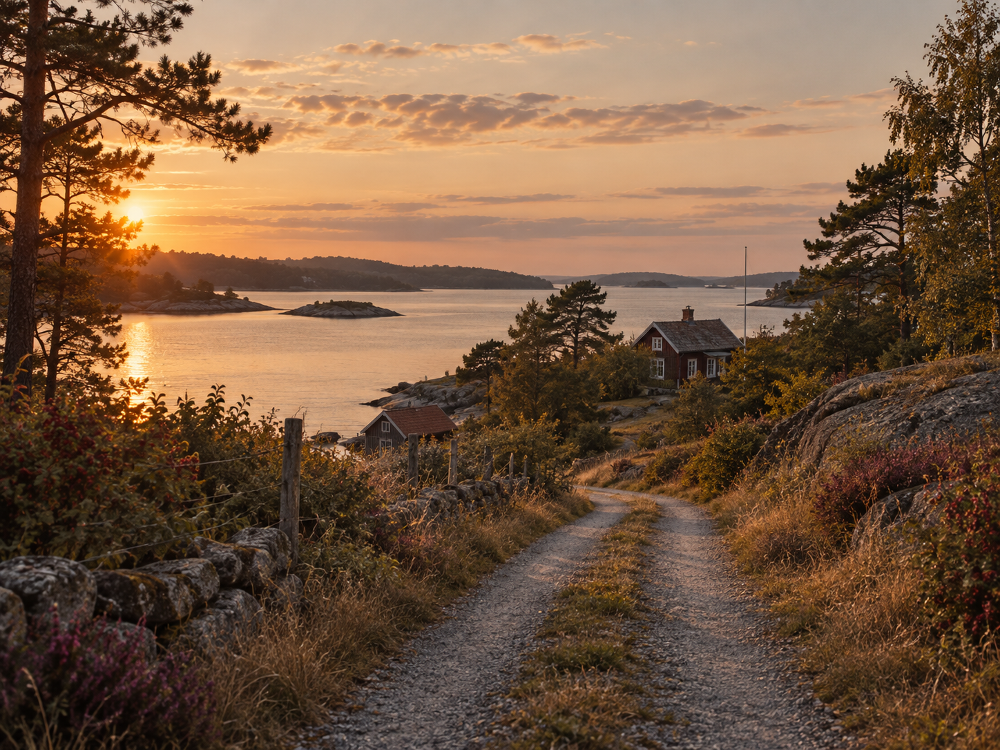
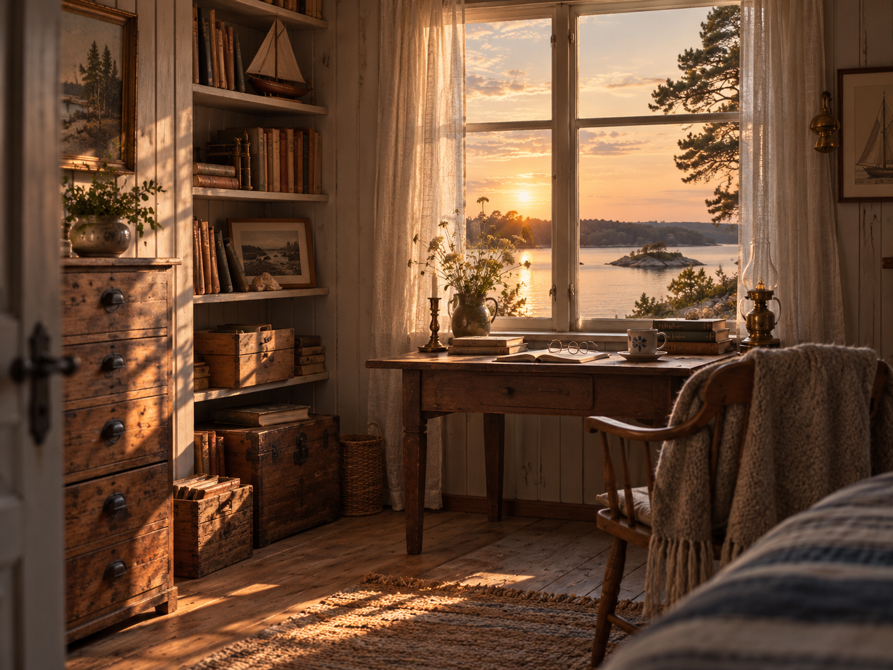
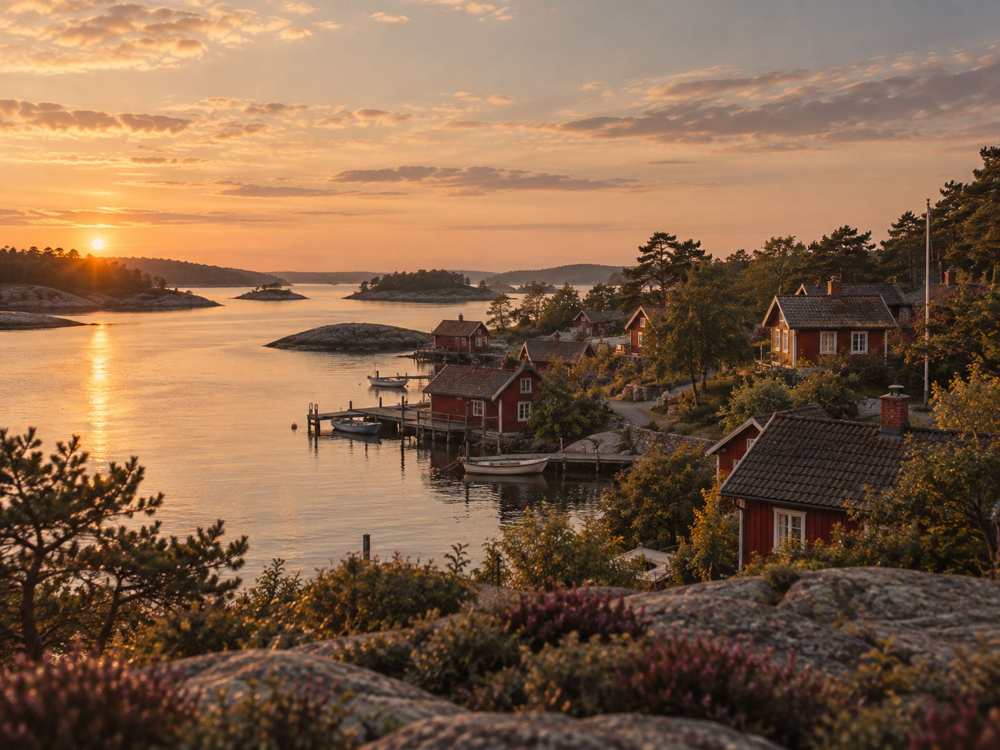
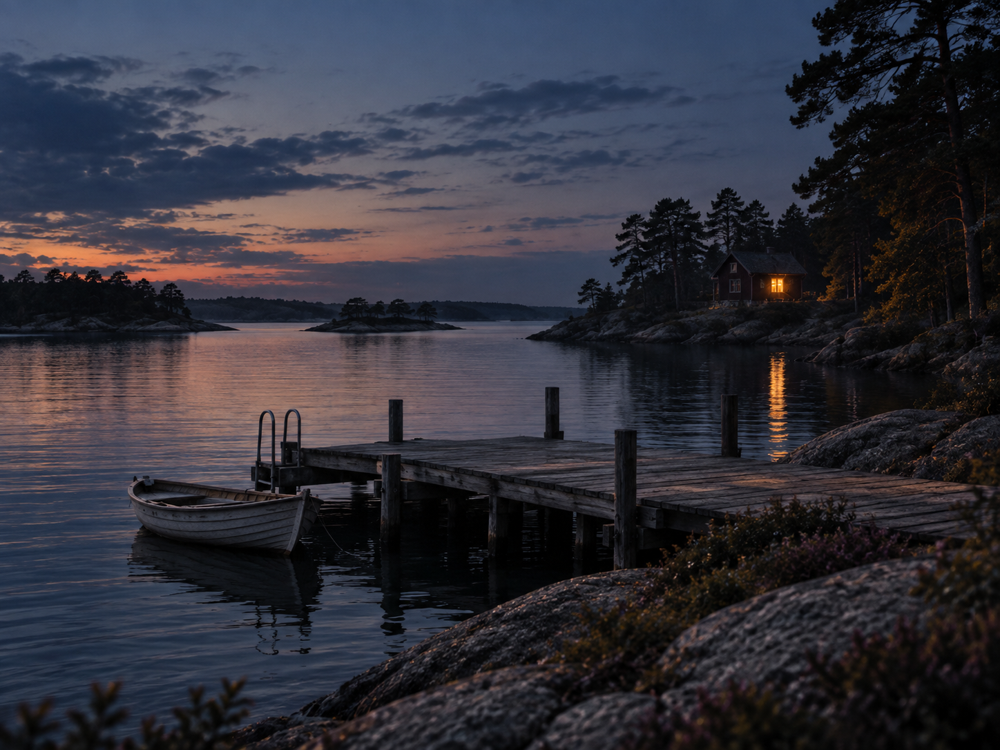
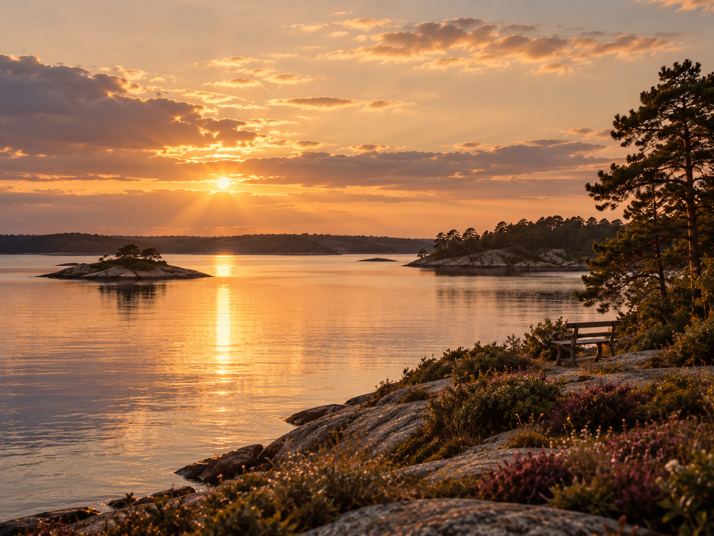

INUTI BOKEN
Sex kapitel.
En sommar som förändrar allt.

1. Återkomsten
Liv återvänder till ön efter nästan femton år. Allt ser mindre ut än hon minns – förutom känslan av att något fortfarande väntar på henne.

2. Huset vid vattnet
Rummen står nästan orörda. Bland gamla böcker och fotografier hittar Liv spår av något familjen aldrig talat om.
3. Brevet
Ett gömt brev väcker frågor om den sista sommaren på ön. Orden förändrar bilden av det Liv trodde att hon mindes.

4. Det ingen berättade
När Liv börjar fråga runt går berättelserna isär. Ju fler svar hon får, desto tydligare blir det att någon har hållit sanningen undan.

5. Natten vid bryggan
Ett gammalt fotografi väcker fragment av en kväll Liv länge försökt glömma – röster över vattnet, ficklampor i mörkret och någon som ropar hennes namn.

6. Där ljuset stannar
När sanningen till slut kommer fram måste Liv välja vad hon vill bära med sig vidare – och vad hon äntligen kan lämna bakom sig.